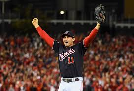
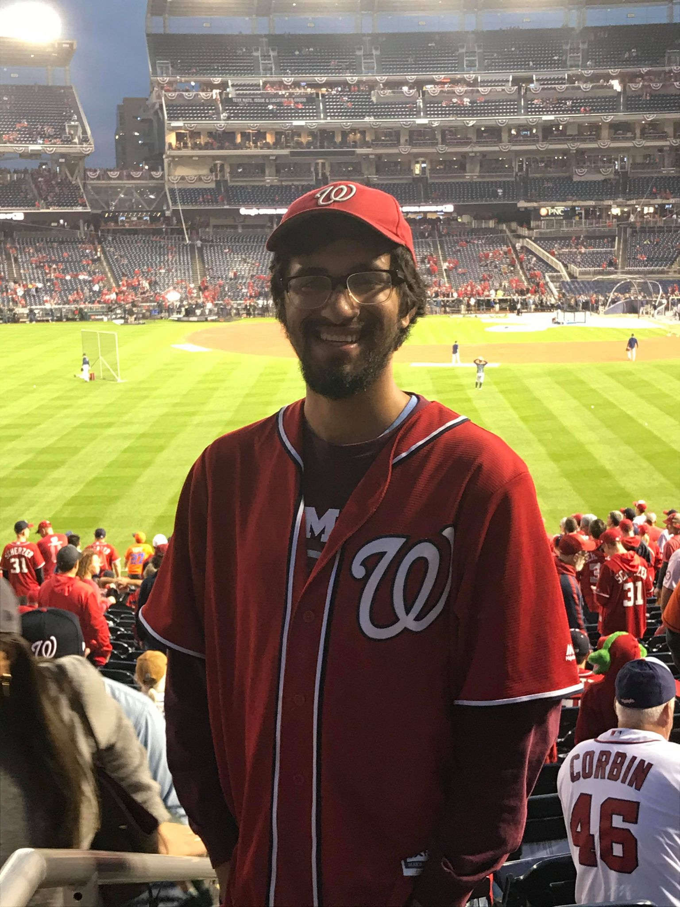

I have been a big Washington Nationals fan since I was a little kid. The first baseball game I went to was a 2007 Nats-Giants game at RFK Stadium in Washington D.C. Baseball has always been my favorite sport because of the emotional connection you grow to your favorite team every day over the span of 8 months.
My favorite baseball player would have to be Ryan Zimmerman. He was the first pick ever made in Nats history when he was selected in the 2005 MLB Draft. He's been with the team when they were really bad losing 100 games in 2008 and 2009 to ultimately winning the World Series in 2019.
Favorite Memories
I was lucky enough to attend Game 4 of the World Series in D.C. last fall. Although the Nats lost 8-1, it is an experience I will never forget!
